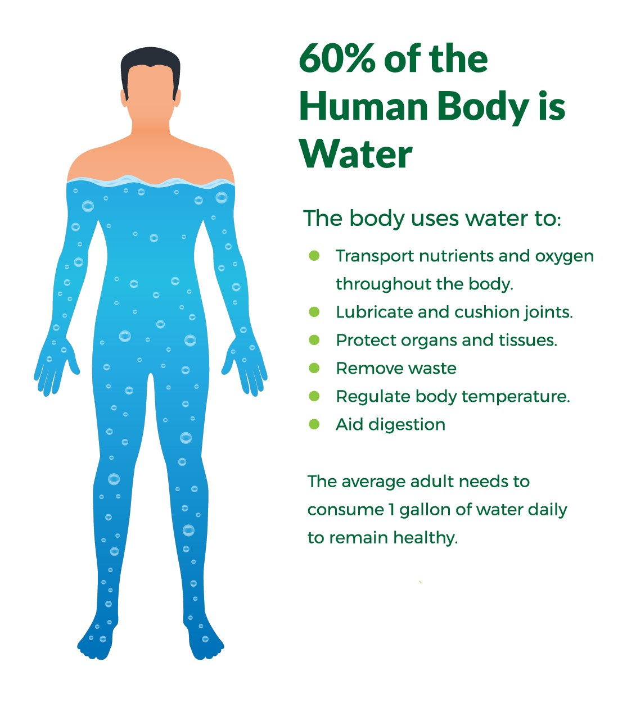
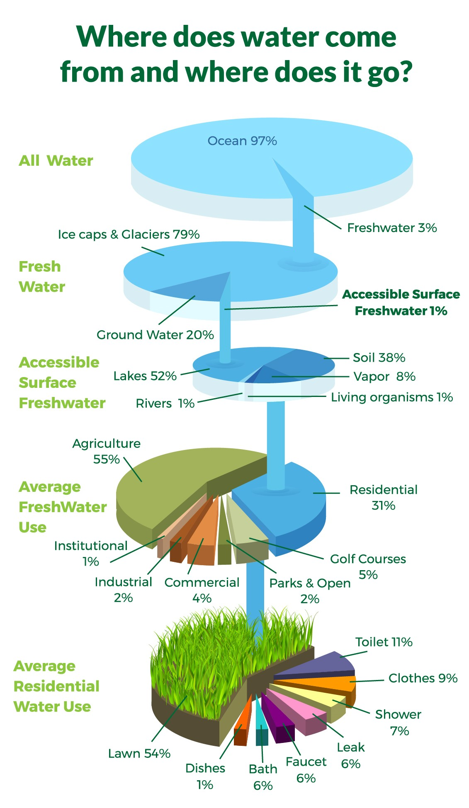
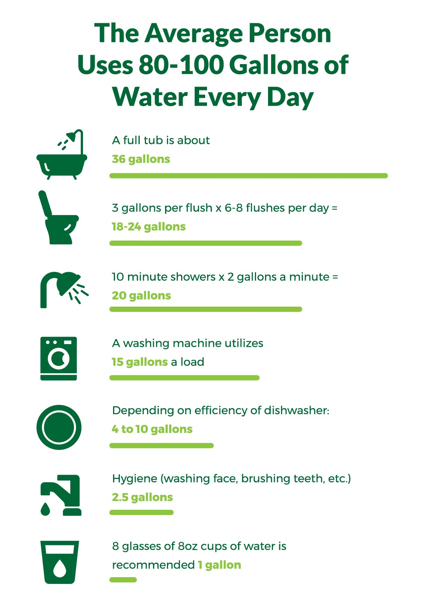

Water conservation might sound like a distant problem for many, especially those in areas where water is plentiful. But, just because something is in abundance does not necessarily mean we should use it irresponsibly. In this post, we’ll talk about why saving water is important, as well as helpful ways you can conserve water at home and at your business, including taking advantage of our selection of high quality turf.
Why is saving water important?
Well, for starters, the one that everyone knows: Human beings are 60% water. Water is a vital part of our functioning, which is true for the rest of life on this planet. Plants, animals, and the environment all need water to survive and function. Humans use water for just about everything, from growing food, to sanitation, and recreation. Water is an important and essential part of every ecosystem on the planet, and when it’s damaged or reduced, there are serious repercussions and consequences for human and animal life.
Some people don’t realize that drinking water is a valuable and limited resource, and that conservation makes a huge difference. When you conserve water, you ensure that there will be enough for people to use in your community. Prudent and economic use of water makes a huge difference. Especially in times of drought, conservation helps make it so a given area has enough water to go around. Water scarcity is an enormous problem in some parts of the world. While conserving water domestically isn’t going to necessarily help abroad, conserving locally can make sure that your community has access to food and clean water for drinking, cleaning, hygiene, and sanitation in daily life.

Food
Most of human water consumption goes towards agricultural production. Producing livestock, crops for human consumption, and crops for livestock all require millions of gallons of water to feed the population of millions of people. Water is also necessary for food preparation— from boiling water for your morning coffee, washing your fruits and veggies for lunch, to cooking a spaghetti dinner. And don’t forget about washing your hands every time you handle food, or all the dishes left behind.
Sanitation
Water is a key component of sanitation, and of waste management in many countries. What if you had to walk miles to retrieve clean water? Imagine shaving or brushing your teeth without water, or having to share bath water with an entire household. It would be hard to have clean dishes to eat off, or clean clothing to go about your day. These luxuries are not solely attributed to the convenience of indoor plumbing and other technological advances—Indoor plumbing wouldn’t even be the convenience it is if there weren’t enough clean water for everyone to access.
Savinf Water Saves Money
Like we said, water is a limited and valuable resource (it literally makes life possible), and we have to pay for its use. It’s not a huge expense, but wasting water can really add up over time, because the water meter never stops counting.

Environmental Impact
Every time we use water, it is exposed to pollutants and contaminants. That water either returns to the environment where it can spread pollution and have a negative effect on the ecosystem, or it is processed at water treatment plants where it is made potable and the cycle starts over. When ecosystems are damaged by pollution, both humans and wildlife are disrupted. We don’t want to pollute our environment for ourselves and others, and water conservation is effective in reducing pollution and conserving wildlife.
Energy
Water treatment plants use a lot of energy, and our reliance on fossil fuels and nonrenewable resources means that we need to be mindful and careful about the water, and the energy we use. Energy production produces additional pollution as well. The more water we use, the more energy we use, and the more pollution we create. It seems like we’re a small part of the cycle, but the more we use, the more of a footprint we have in that cycle, and that makes a big difference.

What can you do to conserve water?
There are a few simple things that you can do at home to conserve water, and most of them start with a few adjustments.
1. Take shorter showers or take a bath. A typical showerhead will spray at roughly five gallons per minute, and cutting a shower from eight minutes to three will save roughly 25 gallons of water. That’s a lot of water over a lifetime. On top of that, taking baths can allow the luxury of a long shower with much less water used.
2. Don’t let the faucet run. Whenever you’re brushing your teeth or doing dishes, turn the water off between motions. That will keep from wasting water!
3. Use water-saving appliances. When a home is outfitted with high-efficiency plumbing fixtures and appliances, you’ll save around 30 percent of your indoor water use while also gathering substantial savings on water, sewer, and energy bills.
4. Finally, the big one: your lawn. Why waste gallons of potable water by keeping a thirsty field of grass alive? If you want a lawn that looks good, saves you money, and helps the environment, artificial turf is the way to go!
How Turf Saves Water
Watering is one of the most important tasks to keep a lawn lush and green. Having a lawn is a lot of responsibility, and property owners should familiarize themselves with irrigation systems, seasonal lawn watering schedules for maximum absorption and minimum evaporation, and soil drainage and moisture retention. But that all sounds really complicated and like a lot of work. Irrigation systems can get expensive, but it’s a hassle to remember to stay on top of a watering schedule. What if you could have a nice green lawn without having to waste so much water? Turf helps water conservation efforts by reducing one of the ways people use water, while also maintaining the luxurious appearance of a lawn.
Switch to artificial turf to save your water for more important stuff. The 6,000+ synthetic turf fields currently in the US save between 500,000 and 1,000,000 gallons of water apiece each year—that’s 3 billion gallons of water saved in a single year. You can use that extra water to grow a vegetable garden or fill up a pool in the hot summer months. Or, just take a bath in the money you’ll be saving—It’ll be hundreds of dollars a year. Artificial turf makes for a verdant and attractive lawn, so you’ll be the envy of the neighborhood, saving water, saving money, and saving the environment all at once.